孖仔帮与您分享双胞胎育儿经
点击蓝字
关注我们
文|圆圈妈，一个文思如尿崩的双胎妈妈
★ 前言 ★
继续双胞胎婴儿车的话题，前几天孖仔帮推文提到双胞胎婴儿车的款式和品牌，以及圆圈妈是如何选婴儿车的。
今天会继续说到双胞胎婴儿车一些细节问题。
首先，插播一个小插曲。
双胞胎婴儿车的两篇文章推出后，我被众多宝妈投诉了。o(╯□╰)o...
据说是本来已经决心买并排款，结果被我一番妖言惑众后，觉得单人婴儿车貌似不错，前后款好像更好。
最后还是回到原点，不知道买哪款了。
￣□￣｜｜不好意思，帮倒忙了。原来你们的选择综合征不是一般的走火入魔啊。
我懂的，导致你们摇摆不定无非就是对双胞胎婴儿车一些实际操作和使用上的细节一知半解。
大家都想在预算有限的情况，用最少的钱买到最合适的婴儿车，从而挑花了眼。
今天这篇推文将会从双胞胎婴儿车细节考虑，相信你们看完后应该心中有数了。
可坐可躺VS 可坐不能躺
这两个车建议分阶段购买，根据两宝宝的生长发育状况，按实际需求选购。
对于新生儿或还不能坐立的双胞胎Baby,首选可坐可躺款。
理由如下：喂配方奶的宝妈可以让两宝宝斜躺在婴儿车上，实现两宝同时喝奶的梦想。
喝完奶后，拍完嗝，还可以把他们放在婴儿车上小睡一会儿，搭上小蚊帐，营造了一个非常舒适的睡眠环境。
有时候人手不足，我不得不把圆圈放在婴儿车上，背部垫一层靠垫或柔软的海马牌记忆枕，同时给他们喂奶。
但新生儿期不建议这样做，最好是满三个月后。
当两宝宝会坐立了，从出行方便考虑，可以考虑买伞车或者口袋车，伞车有分可坐不能躺和可坐可躺两种。
圆圈1岁时，我给他们买了两辆只能坐不能躺的独立伞车，起初我也曾纠结要不要买可坐可躺的伞车。
综合考虑后，觉得可坐不能躺的伞车会更适合我们，事实证明，确实如此！
伞车的舒适度没有可坐可躺的婴儿车那么好，且承托力有限，若孩子睡着了，窝在狭小的伞车下，脊柱得不到支撑，会很憋屈。
此时可找个地方坐下来把孩子抱起来睡，若孩子只是浅睡下，坐在婴儿车上斜靠着眯一会儿也没关系。
个人觉得伞车的主要特点是轻便便携，鸡肋附加的东西尽量不要，不然就失去伞车的意义。
可坐可躺的伞车，稍显笨重，失去了伞车该有的轻便，我甚至连遮阳伞和置物篮等配件都没买，越轻便越好。
这个伞车被我和圆圈爸发挥到极致，被我列入养育双胞胎育儿神器的头等宝座。
推着伞车，带着圆圈，走遍深圳大街小巷，拉风极了！
不过，等到圆圈2岁左右，就很少让他们坐伞车了，主要是鼓励他们自己多走动，逐渐减少对伞车的依赖。虽然走不了多久就需要大人抱着，可是很值得。
圆圈兄弟2岁10个月可以爬上垂直高度973米的梧桐山就是这么练出来的！
高景观婴儿车好不好？
不得不承认，高景观款式真的好拉风，堪称婴儿车界的越野车！
许多商家对高景观车是这样描述的：避开汽车尾气，开阔宝宝视野，拉近沟通距离，方便吃饭玩乐…
是的，说的真好，可是缺点也有哦！
太笨重了！太占地儿了！
双胞胎高景观婴儿车，不管是并排还是前后，都让人有庞然大物的既视感，纷纷秒杀众人的眼球。
非常考验家庭住房的面积。
在深圳这样寸土寸金的大城市，我真不敢如此任性地买这样的大BOSS放在只有6平方米大的阳台上。
套用黄渤在《一出好戏》的台词：我有想开玛莎拉蒂的心，可是只有开拖拉机的命。
如果家里有矿，那土豪请随意哈。
婴儿车的配件要全套购买吗？
婴儿车会有很多配件如，遮阳蓬，置物篮，扶手，餐盘，雨伞，坐垫，凉席，杯架，脚踏板等
这个看家庭各自的需求，选择性购买即可。
这里格外说下婴儿车置物篮。
很多双胞胎家庭会看重婴儿车的储存空间，觉得双胞胎的用品很多，置物空间必须够大，才能把杂七杂八的东西全扔里面。
如果你真那么想，那你会遇到需要收车的时候，还要去清空置物篮这样尴尬头疼的局面。
这就是为什么我并不注重婴儿车的储存空间。
我很看重婴儿车的便携性和灵活性，而且越快越好，一切从简，最好是秒收车那种！
两宝宝的用品置放问题，可以用其他办法解决，如在婴儿车上悬挂妈咪包或者安装可拆卸的置物篮，需要折叠的时候，就把妈咪包收起，瞬间收车。
精明的商家给婴儿车准备了很多附加功能，分经典版，豪华版，升级版，但大多都很少机会用，甚至因功能太多反而妨碍了正常功能的使用，最后把自己给整晕了。
有些只是换汤不换药，只是在原有基础上额外多了些配置。
就好像买车也分低配，中配，高配一样。
除非那些额外配置确实是自己家庭需要的，不然一律选经典款即可，不需要花那些冤枉钱。
须知道不同级别，价格相差还是挺远的。
婴儿车的安全性能不可忽视
双胞胎婴儿车的安全性能必须是首要考虑的第一要素！没有之一！
所有不考虑安全性能，只图美观大方，花里花俏的婴儿车，都是谋财害命。
仔细算算，我们用到婴儿车的地方挺多的，两宝宝在1岁半之前都有很多时间呆在婴儿车上，尤其是外出，更加要小心谨慎。
我买的可坐可躺款婴儿车奇丑无比，功能也不是很多，但胜在安全。
正如我买七座车，为了安全，选了超级耗油的锐界。
虽然1公里烧8毛钱，心疼的不要不要的，但想到我和圆圈不是坐在如纸片般的五菱荣光上在高速路上跑，好像又没那么忐忑了。
那么，小宝宝也是一样的！
安全性能，可以从婴儿车的轮子，车架和座椅，这三方面考虑。
框架的耐压性，座椅的承重性，轮子的耐磨性，减震性等。
具体可参考品牌商发布的测评报告，也可以去各大育儿论坛参考过来人的意见。
这里简单提下婴儿车的轮子，力求减震，耐磨，好推。
外面的路况并不是家里的瓷砖，光滑透亮，总是有小坑洞等着你去踩。
轮子不减震意味着，随便一个小洞就足以把睡梦中的两宝宝晃醒，甚至会因剧烈摇晃，磕碰到车身。
因此，想要带着双胞胎宝宝Happy ending地出行，好轮子才是王道，才是轻松省力的关键所在。
多年的淘宝店经验温馨提示：不要看某宝的好评和追评，这水深套路多，别火急火燎往里跳。
下手前多方参考和对比，三思而后行，机智如你，不会上当受骗的啦！挺你哦！
不要忘了刹车装置
说到安全性能还有一个需要格外考虑的因素：刹车装置，有踏板式和手刹式。
个人建议，粗大条的宝爸宝妈，还是选手刹式吧。
我是手脚下手很重的女汉子一枚，偏偏我给圆圈买的三款婴儿车都是踏板式的。
这3款车用了一段时间后无一例外，首先重伤的就是踏板处，而罪魂祸首就是我。
因为我总是很担心，没有踩中刹车，然后就使劲多踩几遍，于是就….
当你确定一款车时务必了解下刹车装置是否靠谱，确定是否管用而不是摆设！
因为身边已经有很多血淋淋的教训告诉我们，婴儿车刹车失灵可能会导致各种悲剧的发生。
请敲响警钟！
说选购婴儿车是一门学问，一点都不过分，难怪我们都晕得七荤八素的。
要考虑的因素太多了，面面俱到，几乎不可能。
双胞胎婴儿车的基础功能和玩法基本上都差不多，不外乎是多几种模式，区别在细节上，如配件的质量，做工等。
实际上很多模式，我们在实际育儿上，并没有机会用上，每天都是两宝宝的屎尿屁，你压根没有心思去每天变换花样。
截止今日，关于双胞胎婴儿车的话题写了三篇文章，看完后，不知道你选好了吗？
如果依然晕头转向的，那我真的爱莫能助了。
要不，你就爽快点吧！听我一句劝！
买可拆分的婴儿车，秒分秒合就对了。
牌子差不多得了，功能标配就行了。
质量能撑到孩子1岁就OK了。
其他的就别考虑了，专心怀孕吧！
番外篇：
给大家隆重介绍下圆圈曾经用过的一款超级拉风的双胞胎推车---双人位竹推车，堪称双胞胎婴儿车界的小仙女，如图所示：
这款推车使用时间只有3个月。
当时是深圳最热的时候，买了辆双人位的竹推车解暑，也算是了了我想要给圆圈买双胞胎专用婴儿车的心愿。
这个推车样子款式很经典传统，百分百回头率，路人纷纷跑过来求推车购买链接。
但是说实话，这推车实用性不高。
太长了，不好推，而且轮子也不是万向轮的，很难控制方向，尤其是在崎岖不平坦的路上走，简直寸步难行。
而且设计很不合理，扶手太矮了，我160CM的个子要稍微弯腰推着前行，这样走久会很累。
最后被丢回圆圈爸老家当摆设了。
双胞胎婴儿车相关文章
想买品牌双胞胎婴儿车，人民币答应你了吗
双十一囤货：我为什么不买并排式的双胞胎婴儿车，这篇文章有答案
重要通知
孖仔帮有双胞胎爸爸专属群啦！
在此你们可以互相交流下初为人父的喜悦和已为人父的辛酸，还有你们男人间的家长里短…尽情唠嗑吧！
入群方式：＋圆圈妈的微信(sgguy-com)，我会发群聊邀请给你们。欢迎准爸爸的加入双胞胎育儿大家庭，一起分享双胞胎育儿经。
#重磅互动#
评论区聊一聊
你希望圆圈妈写什么干货？
随便提，万一下篇就写了呢？
END
本文系圆圈妈sgguy-com原创，来源于孖仔帮，专注双胞胎孕期育儿经验分享，著作权归孖仔帮所有。
212:原来双胎妈妈可以这样数胎动，好简单啊
215:双胎子宫日记系列|（下）你看不看？双胞胎妈妈直播剖腹产全过程
302:喂养干货||如何训练双胞胎宝宝睡整夜觉
306: 真人示范！双胞胎妈妈高难度喂母乳技巧
219双胞胎准爸爸的生存指南：不做猪一样的队友，活着出来喜当爹
220双胞胎准妈妈，其实你的产检方式一直搞错了…
222:看过这份最简单的双胞胎宝宝用品囤货清单，其他的都是将就
712：双十一囤货：我为什么不买并排式的双胞胎婴儿车，这篇文章有答案
304:家有双胞胎宝宝，这6个小贴士越早知道越好
305:双胞胎宝宝怎么睡？这样做既省钱又安全
303:干货||配方奶喂养的双胞胎宝宝囤货用品清单
309: 如何顺利度过双胞胎宝宝的第一年
710:双胎妈妈囤货建议||这6个育儿神器，吃土也要买
我猜你肯定喜欢看上面的文章，对不对嘛？关注孖仔帮，回复文章前面的数字编号即可阅读。
长按识别二维码关注我们
关于这个号
谢谢关注！我是圆圈妈
85后，全职双胎妈妈
家有孖仔男宝两枚，圆圈&圈圈
双胞胎育儿公众号：孖仔帮
旨意分享双胞胎育儿经验帮助双胞胎家庭
有经验可循
有组织可靠
希望我的经验对您有所启发
期待与您一起共享双胞胎育儿经
孖仔帮目前有4个微信社群
孕期群，喂养群，闲置群，双胞胎爸爸专属群，
如需入交流群，请+圆圈妈的微信号sgguy-com,或扫描下方二维码
由圆圈妈邀请入群
更多孖仔帮双胞胎原创育儿文章请猛戳 "阅读原文" 或者直接上圆圈妈的个人博客。
博客链接：https://www.sgguy.com/twinsbang

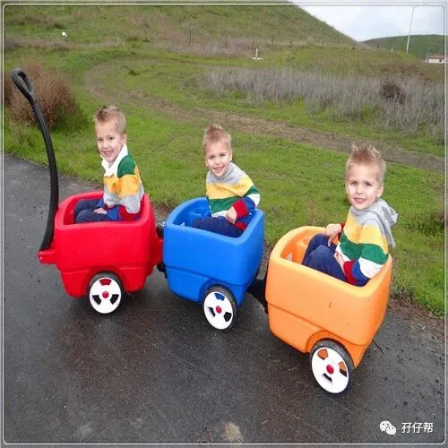
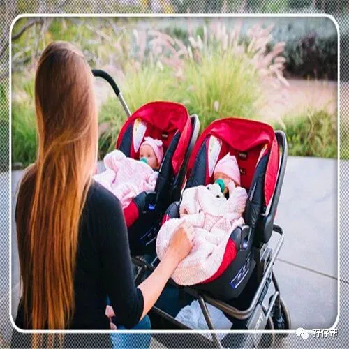
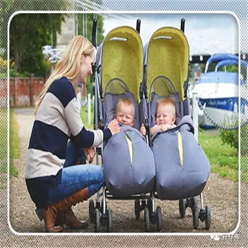
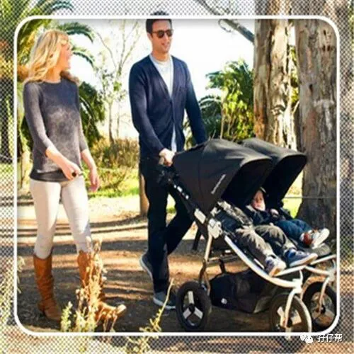
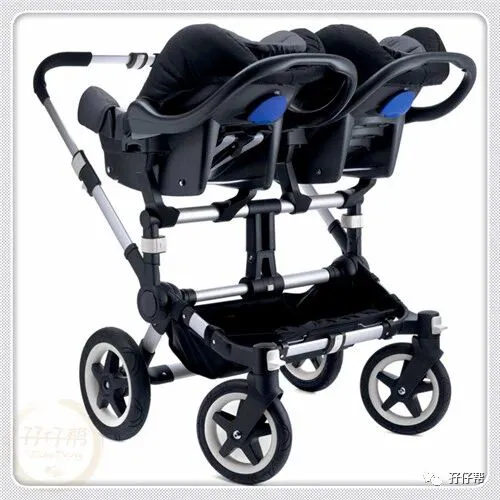
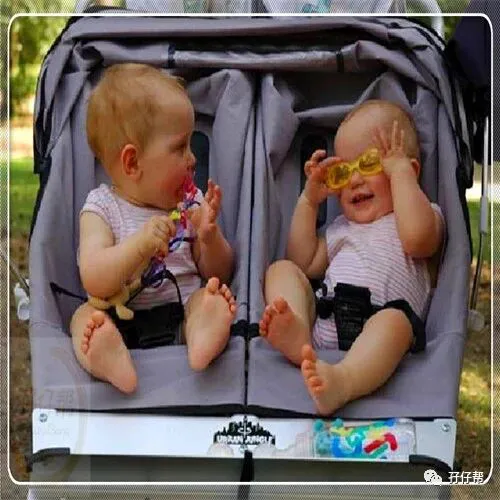
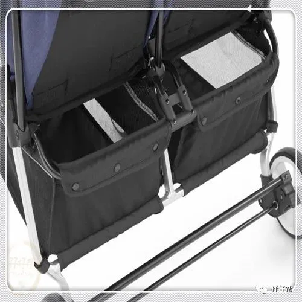
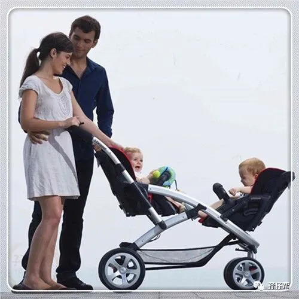
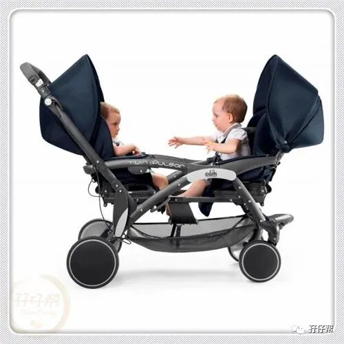
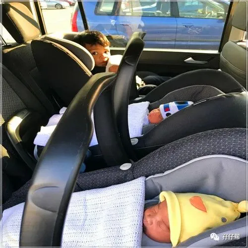
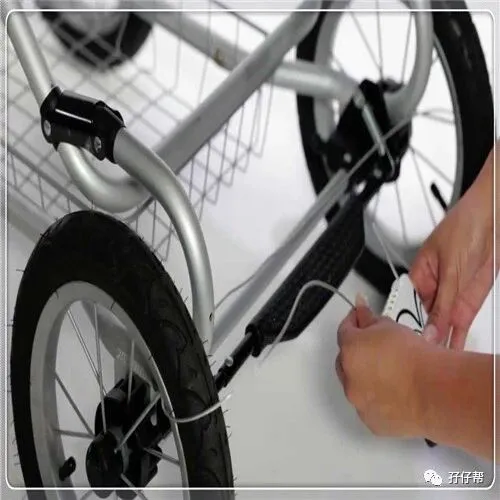
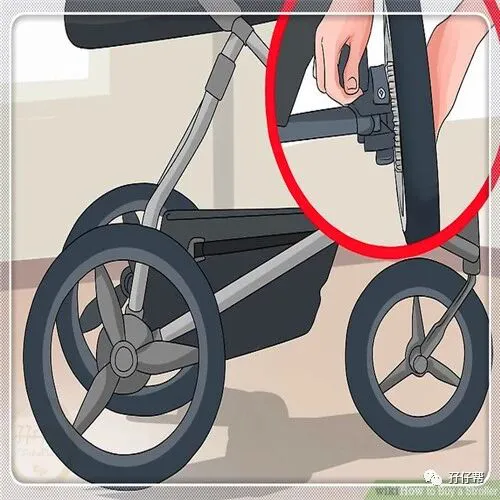
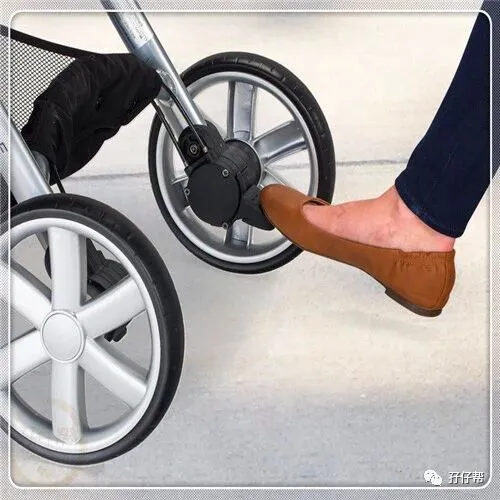
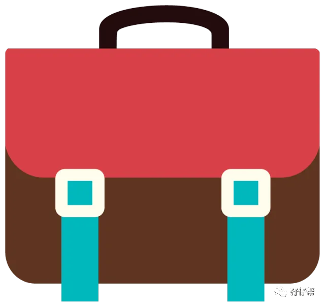
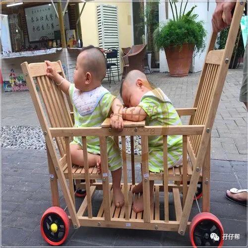
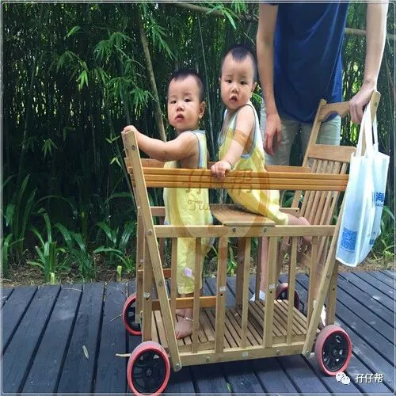